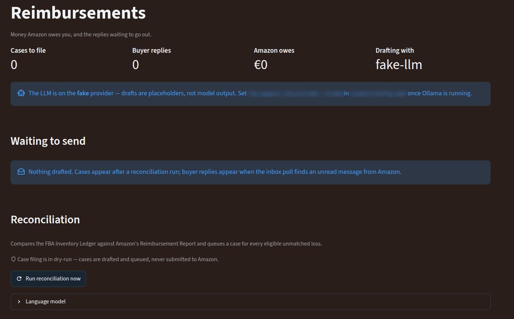

Two of Biryar's agents produce words rather than numbers. One reads Amazon's warehouse records and drafts claims for stock that was lost and never paid for. The other reads buyers' messages and drafts replies with a small language model that runs on the seller's own hardware. Neither of them sends anything, and that single decision shapes almost everything about how they are built.
The board is at the top because it would be easy to read the rest of this report as a description of working machinery. It describes finished machinery that has yet to run on real data, so what follows is an account of design rather than of results. The design questions are the interesting part, and they do not change when the data arrives.
Stock sent to Amazon for fulfilment lives in Amazon's buildings, and a small share of it is lost in transit, damaged in a warehouse, or never found after a customer return. Amazon's policy is to reimburse the seller for such units, in cash at an estimated value or with replacement units. Two of Amazon's reports describe the two sides of that promise. The inventory ledger records every movement of every unit, including the ones marked as lost or damaged, each with a reason code. The reimbursement report records what Amazon actually paid back. In principle the second covers the first. In practice the two drift apart, nobody on the seller's side reconciles them line by line, and the gap is money owed that nobody asks for.
Reconciling two independent records of the same events is one of the oldest procedures in auditing [1], and the auditor applies it in its plainest form. It reads every ledger event with a recoverable reason, damaged or lost in a warehouse, inbound, in transit or after a customer return, or destroyed, treats each as a claim the seller holds against Amazon, and then lets reimbursements pay those claims off.
The matching rule is deliberately conservative. Losses of the same product on the same day are collapsed into one claim. Reimbursements are applied oldest first, each to the oldest loss of the same product that is still owed and lies within 120 days of the reimbursement, and a single reimbursement can drain several losses, with every drained claim recorded so the trail can be audited. The rule matches on product, window and quantity, and pointedly not on the reason text, because Amazon's reimbursement reasons rarely echo the ledger's wording and trying to be clever there would produce false claims a seller could not trust. Whatever remains unpaid is owed, and a remaining balance becomes eligible for a drafted claim only once the loss is 45 days old, which gives Amazon time to pay on its own first. The scan looks back 540 days. All three windows are configuration rather than code, because Amazon's own claim rules have changed more than once and will change again.
The value of an owed unit is the seller's landed cost, the one number no Amazon report contains. The auditor reads it from a cost table supplied to it, and a product missing from that table falls back to a configured default, so the amount on a claim is only as good as that table. Part 5 of this series describes a more careful, dated record of the same cost, and joining the two is listed under what remains.
Beside the claims, the auditor watches for warehouses that start losing stock at an unusual rate, a sign of a process problem worth raising with Amazon even before any individual claim matures. For each warehouse it counts recoverable losses per day over the lookback window and scores each day with a robust z-score.
The median and the MAD are used because they resist outliers [2, 4]. With an ordinary mean and standard deviation, one bad week inflates the spread so much that the next bad week no longer looks unusual, which is precisely the case that matters. An early version had a subtler flaw. It built each warehouse's baseline only from days on which losses occurred, so a long quiet period followed by a sudden spike never accumulated enough history to be scored at all. Days without losses now count as zeros within the window, so silence is part of the baseline, as it should be.
A seller's ledger over eighteen months can run to millions of rows for a large account, and Amazon delivers reports asynchronously, request, wait, download. The auditor is built for both facts, even for a small seller. It streams reports rather than loading them whole, stores them in its own local database, and reconciles one product at a time, so memory never holds more than one product's history. Ingestion is idempotent. A re-pulled date range replaces what was there, and reimbursements are keyed on Amazon's own identifier, so repeated pulls converge rather than double count. Later runs ask only for days not yet seen. A report request still being prepared by Amazon when the process stops is remembered and resumed rather than requested again, every network call retries with exponential back-off on throttling and gives up at once on errors that retrying cannot fix, and a reconciliation interrupted halfway leaves a marked, unfinished run that the next pass can resume.
Until the live reader is switched on, the same pipeline runs from report files exported by hand from Seller Central, through the same parsers, so the file path and the live path produce identical events from identical rows.
An eligible claim becomes a pending item in Biryar's approval queue, carrying the product, the warehouse, the date, the reason, the quantity and the amount, and a link to the prediction log entry that produced it, so the seller's eventual approval or rejection becomes a label for later learning. The text of the claim comes from a deliberately formulaic template, because the agents who process reimbursement requests work from structured facts, product, warehouse, date, quantity, reason, amount, and a well-ordered list of those facts is what gets a claim handled. The template is a replaceable component, and Part C describes how the scribe can supply more natural prose instead.
The auditor never files anything. Its configuration carries two separate safety switches, and both must be turned off before any claim could leave, and even then the interface for submitting a claim is intentionally left without an implementation, so a request to file answers that nothing is wired rather than pretending something was sent. Claims are filed by a person in Seller Central.
Buyers write to sellers through Amazon's messaging system, and Amazon forwards each message to the seller's registered email address. Amazon's programmatic messaging interface sends messages but offers no way to read the inbox, so the scribe reads a mailbox. A parser recognises the forwarded emails by stable identifiers, the order number and the product's Amazon identifier, rather than by label text that varies between marketplaces and languages, and each message is paired with the order behind it, its dates, the amount paid and whether a return is still possible, because a reply that knows the ship date says something true and one that does not either guesses or stays vague.
The drafts come from an openly available instruction-tuned model. The default is Qwen2.5-3B-Instruct [6], quantised to four bits so that it needs about two gigabytes of graphics memory and runs comfortably on a modest four-gigabyte card, served by a local runtime that loads the model on demand and frees the memory between requests. The seven-billion-parameter sibling writes better prose and is a configuration change away, at the price of spilling onto the processor on such a card and running more slowly. The small model is an acceptable trade because the output is a draft that a person reads, and because a reply to a buyer needs to be short, correct and polite far more than it needs to be eloquent. The sampling temperature is kept low, at 0.3, so drafts stay conservative and predictable.
Running locally is a privacy decision as much as a cost one. Buyer messages contain names, addresses and order details, and the platform's rule is that business data and buyer data do not go to third-party models. The drafting agent can talk to three hosted language-model services, but it refuses to build any of them unless the seller has explicitly opted in, and even then sensitive numbers are removed before any text leaves. This follows the data-minimisation principle of European data protection law [7], applied in its strictest form, where by default the data does not leave the machine at all.
The model receives the buyer's message, the order facts and a system prompt that reads more like a contract than an instruction. It may draft only. It may offer at most one of a short list of permitted actions, pointing to the tracking information already on the order page, offering a return label if and only if the order is still eligible for return, or escalating to a person within a day. It may not reveal costs, suppliers or wholesale prices. It may not apologise for an event the order data says has not happened. And it may not state any product fact it was not given, no specifications, ratings, measurements or compatibility claims, with a worked example of the right and wrong answer to a question about waterproofing and battery life. That last rule exists because language models produce fluent, plausible statements that are simply false, a failure studied at length as hallucination [8], and on a product page a false specification is a returned order and possibly a complaint.
There is a second reason to treat the prompt defensively. A buyer's message is text written by a stranger and placed inside the model's instructions. Research on systems that embed untrusted text in prompts has shown that such text can carry instructions of its own that the model then follows [9]. The scribe cannot fully prevent that, and it does not need to, because the worst a manipulated draft can do is sit in a queue in front of the seller. The decision not to send anything turns a security problem into a proofreading problem.
| Layer | What it does | Examples |
|---|---|---|
| Refusal triggers | Skip the model entirely and write a note asking for a person | legal action, lawyer, lawsuit, police, fraud |
| Redaction | Remove sensitive numbers before any model sees the text | payment card numbers, national identity numbers |
| Prompt rules | Constrain what the model may claim or offer | one permitted action, no invented product facts, no cost data |
| Length budget | Cap the reply, and truncate server-side if the model ignores the cap | about 250 tokens for a buyer reply, 350 for a claim |
| Draft flags | Mark risky wording for the seller's attention without blocking it | "refund of", "guarantee", "we will replace" |
The flags deserve a note. They do not block a draft, they mark it, so that the seller's eye goes first to a sentence promising a refund of a specific amount or a replacement. Automation research has long documented that people supervising an automated system tend to accept its output without enough scrutiny, a tendency called automation bias [10]. A visible flag on exactly the sentences that commit money is a small, deliberate counterweight to it.
An illustrative exchange, written for this report. It shows the shape of the process, a declined specification question, a flagged commitment and a small edit, not a real buyer.
Every draft is written to the platform's prediction log, and every decision the seller makes about it, sent unchanged, edited, or rejected, is recorded against it. The quality measure that follows is unusually honest. It is the share of drafts the seller sends without changing a word. That rate is the agent's primary metric, because an edit is the seller saying exactly where the draft was wrong.
Edits are also the training data. Each edited draft yields a pair, the text the seller preferred and the text the model wrote, which is the input of Direct Preference Optimisation, a method that tunes a language model directly on preferred and rejected answers without training a separate reward model [11]. It belongs to the same family of ideas as learning from human preference comparisons [12, 13], with the useful difference that here the preferences are not collected by asking anyone. They fall out of ordinary work. Training waits until at least thirty edited pairs exist, runs as a queued job on the machine with the graphics card, and would adapt the model with low-rank adapters on a four-bit base, the QLoRA recipe that makes fine-tuning feasible on a four-gigabyte card [14]. Like every model in Biryar, a retrained version ships in shadow and replaces the current one only when a person promotes it.
The rate at which the system can learn is therefore bounded by how much a seller writes. That is a sensible bound. A small shop with few messages needs few improvements, and the training data grows exactly as fast as the need for it.
Parasuraman, Sheridan and Wickens proposed describing automation by how far it reaches into four stages, gathering information, analysing it, deciding and acting, and recommended that the level of automation be chosen separately for each [15]. The two agents in this report sit high on the first three and at zero on the last. They gather everything, analyse it, and propose a specific action with its full text, and the act itself, sending a message or filing a claim, stays with a person. The choice is not caution for its own sake. Amazon's rules put a person responsible for buyer communication, a claim filed in error costs credibility with the people who decide claims, and the cost of reading a short draft is small next to either.
The auditor's claim text comes from a template, and the template is one implementation of a small interface for turning a structured claim into prose. The scribe implements the same interface with a second prompt, written for reimbursement claims, which is formal, cites the ledger event verbatim, avoids speculating about whose fault the loss was, and never asks for more units or more money than the ledger justifies. The auditor never imports a language model. The platform decides which implementation to hand it, so the deterministic template remains the default and the model's prose is an option that can be switched on, measured and switched off again without touching the auditor.
The division of labour is the general lesson of this report. Arithmetic belongs to deterministic code, which can be tested exhaustively and does not hallucinate. Language belongs to the model, which is good at tone and bad at facts. And the boundary between them is a narrow, typed interface that carries facts one way and words the other.

Switching on the report reader. The live adapter for Amazon's two reports exists and is tested against fakes, and several of its details, report type names, payload field names and the shape of the downloaded documents, are explicitly marked to be verified against Amazon's current documentation before first use. Until it is connected, the weekly reimbursement job finds no reader and stops.
The mailbox, and a quiet failure. When the buyer mailbox refuses the system's credentials, the half-hourly job logs a warning and the scheduler records the run as completed, because the job is written never to fail a scheduler tick. That is the right behaviour for a job and the wrong signal for a person, and a repeated sign-in failure should surface on the platform's health view rather than only in a log.
The model behind the stub. The platform's default configuration selects the test stub for drafting, a safe choice during development, and the page says so in a banner, as Figure 4 shows. A seller moves to the local model by pointing the configuration at a running local runtime.
Language and currency. The prompts and the claim template were written for an English-speaking marketplace, and some order and claim fields are still labelled in dollars. A marketplace in another language needs prompts that say in which language to answer, and the currency should come from the deployment rather than from a field name.
Joining the two costs. The auditor's cost table and the dated costs of Part 5 answer the same question separately. Reading one from the other would mean a claim and a profit figure could never disagree about what a unit was worth.
Thin data, by nature. A young account with modest stock loses few units, and many losses are reimbursed by Amazon without any claim. The auditor's value will show over years rather than weeks, and its anomaly detector needs a month of history at a warehouse before it scores anything.